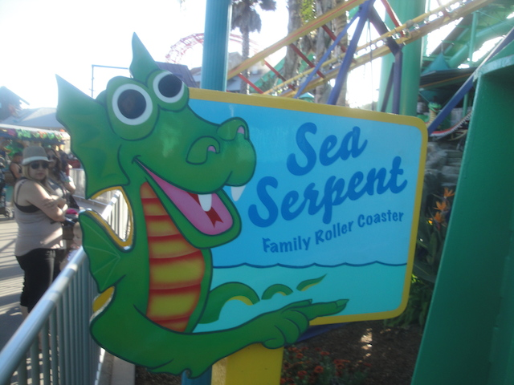

| |
Sea Serpent Review

We're here at the Santa Cruz Beach Boardwalk. For credit whoring, there's Sea Serpent. After you barley squeeze in the cars, you climb up the lift hill. Then you head down the curving first drop. It's a really nice first drop (For a kiddy coaster). Then you go over the first hill. Then you go drop into a kiddy turnaround. That actually has a couple of lateral Gs and the drop actually gives some speed. We then go through a couple bunny hops and head into the station. And it's not that bad. Definetly one of the better kiddy coasters. If you're a credit whore, I'd totally ride this!!! They don't have a kid requirement, so you're safe here!! =)
3/10
Location: Santa Cruz Beach Boardwalk
Opened: 2000
Built by: Miler Coasters
Last Ridden: April 26, 2015
Sea Serpent Photos

|